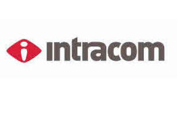

Trade Mark Journal No.2025/049 5 December 2025
UK00004298938 21 November 2025 (7,9,12,16,35,36,37,38,39,40,41,42)

- Class 7
- Machines and machine tools.
- Class 9
- Scientific, nautical, surveying, electric (including wireless), photographic, cinematographic, optical, weighing, measuring, signalling, checking (supervision), life-saving and teaching apparatus and instruments, automatic coin/token-operated machines, speaking machines, automatic cash registers, computers; excluding emergency alarm kiosks and emergency alarm systems; Voice and data communications products, namely, integrated desktop and switching turrets and downloadable computer software platforms for use as a financial trading environment, which support voice, data and video applications; electronic desktop trading console that provides computer, telecommunications and internet capability; computer hardware and downloadable computer software that provides desktop communications capabilities and remote communications for use by financial and other market traders, and instruction manuals, sold as a unit; downloadable computer software that provides desktop communications capabilities and remote communications for use in the financial industry, trading floor environments, security and law enforcement industry, utility industry, healthcare industry and customer support and contact center environments and instructional manuals, sold as a unit; downloadable computer software and downloadable mobile application software for the connection, operation and management of virtual and video conferences, contact and directory management, meetings and telephone calls, for facilitating multimedia teleconferencing, videoconferencing services, web conferencing services, group broadcasts, social networking, instant messaging, electronic mail, email services, faxes, text messages, calendar synchronization, file sharing, telephone voice messages, and Voice over Internet Protocol (VoIP) communication services; downloadable computer software and downloadable mobile application software for accessing multimedia and multiparty communications over computer networks and for integrating communication services with external service providers; downloadable computer software and downloadable mobile application for recording, transcription, organization, display and management of messages, text, images, files, audio, video, data and audio-visual content; none of the above goods in connection with the analysis, consulting, design, optimization, integration of databases, development and provision of managed integration services and technical enablement offerings in the field of IT architectures, system integration and digital business processes, enterprise architecture (EA) consulting and IT management and related services; Antennas; Microwave antennas; Radio antennas; Telecommunications, telephonic and communications apparatus and instruments; radio telephones, mobile and fixed telephones; portable telecommunications apparatus; headsets for telephones; wearable electronic telecommunication and computing devices; data communication apparatus and instruments; voice processing systems; computer networking and data communications equipment; mobile data apparatus; data processing systems; electronic databases; digital telephone platforms and software; computer hardware for telecommunications; telecommunication networks; modems; network routers; broadband installations; electrical and electronic apparatus for use in the reception of satellite, terrestrial or cable broadcasts; apparatus and instruments for the processing, transmission, storage, logging, reception and retrieval of data being in the form of encoded data, text, audio, graphic images or video or a combination of these formats; wireless handheld units and devices; remote controls for electric and electronic devices; personal digital assistants; electronic sensors including pedometers altimeters and weighing scales; barcode and quick response code readers and scanners; audio and video recordings; media for storing information, data, images and sound; digital media content (downloadable), including films, television programmes, radio programmes, videos, images, music, text, data, images, graphics and ringtones, provided from a computer database, the Internet or other electronic network; satellite receiving and transmission apparatus and instruments; computer and video games, including downloadable games; electronic publications (downloadable) provided on-line from computer databases, the Internet or other electronic networks; machine readable media; downloadable digital audio, video and data provided from a computer database, or the Internet or other electronic network; battery chargers for use with telecommunications apparatus; batteries; battery back-up power supply; peripheral equipment for televisions and computers; computers including laptop and notebook computers; electronic personal organisers; electronic and satellite navigational and positional apparatus and instruments including global positioning systems; blank and pre-recorded magnetic cards; cards containing microprocessors; encoded cards; computer software, including computer software supplied from a computer database, the Internet or other electronic network; cloud computing software; data communications software; computer software for wireless data communication; computer software and application software for the synchronization, transmission and sharing of voice, data, calendar and content between one or more electronic devices, for purchasing applications handheld electronic devices and for secure, encrypted purchases; computer software for the streaming transmission and encryption and storage, of audio, video, graphics, text and data on and over communication networks; computer software to enable peer-to-peer networking and file sharing; computer software for conducting and co-ordinating communications among computer users sharing information and audio data via electronic communications networks; software for access control, video control and detecting the presence of persons; software for computer security, including antivirus, firewalls, antispam, anti-spyware, web filtering; intrusion detection software; virtual private network software; anti-theft devices not for vehicles; devices and apparatus for locating movable property; apparatus for sending and receiving information from movable property; devices and apparatus for remote control of electrical apparatus and household appliances; satellite location and navigation systems; electronic and biometric apparatus and installations for access control; apparatus for identifying persons; closed circuit television systems; cameras, television cameras and video recorders for closed-circuit television; optical and photographic apparatus; electric or electronic sensors for vehicles; electronic sensors; sirens; remote control apparatus; GPS apparatus; apparatus for vehicles for determining or signalling vehicle location, locations of site, travel routes, time, traffic conditions, presence of emergency vehicles and hazard conditions; devices to detect and/or exchange data between a vehicle and a remote unit for security purposes; security cameras; security alarms; security software; security warning apparatus; security control apparatus; security surveillance apparatus; motion sensors for security lights; security apparatus for processing audio signals; software for network and device security; software to control building environmental, access and security systems; computer software for the remote control of security apparatus and systems; wireless controllers to remotely monitor and control the function and status of security systems; software for tracking and analysing the movements of people and assets; computer hardware modules for use with the Internet of Things [IoT]; computer hardware modules for use in electronic devices using the Internet of Things [IoT]; application software for use in implementing the Internet of Things [IoT]; computer software for use to connect and control internet of things (IoT) electronic devices; software to enable and facilitate the connection of mobile devices, computers, and other computing devices to closed circuit television systems; hardware and software for the connection via the cloud, Internet or wireless networks of apparatus, systems and devices in the nature of security systems, fire alarms, alarm central units, anti-intrusion alarms, burglar alarms, personal health and security alarms, smoke and gas alarms, home surveillance systems, lighting controls and home automation devices; hardware and software for the connection via the cloud, Internet or wireless networks of apparatus, systems and devices in the nature of systems for inventory and asset management, anti-shoplifting and loss prevention, device health monitoring, consumer traffic patterns, point-of-sale transaction analysis, video enabled applications and store execution functions; fire detection systems; fire detection devices; intrusion detection systems and accompanying accessories; intrusion detection systems and accompanying accessories, namely, detection control panels, configuration software, keypad controllers, alarm sensors, electric switches, electric contacts and electric relays, telephone dialing equipment, hardwire and cellular connectors, central intrusion monitoring stations consisting of audio and visual annunciators; access control devices; asset management and tracking systems consisting of inventory control systems, theft prevention devices and asset tracking devices and radio frequency identification (rfid), microwave, electromagnetic and acoustomagnetic tags, labels, readers, sensors, transmitters, receivers and electrical controllers; telecommunications hardware and software for monitoring and alerting remote sensor status via the Internet; optical beam sensors, namely, detecting, counting and tracking people; sensors for detecting, counting and tracking people; computer software used to operate, control, monitor and manage anti-theft alarms, inventory control systems, theft-prevention devices, people tracking devices and asset tracking devices; communications hardware and software for the remote control, remote operation, remote monitoring and remote management of apparatus, systems and devices, such control, operation, monitoring and management being cloud-based, via the Internet, or via wireless networks; security control apparatus in the nature of wireless controllers to remotely monitor and control the function and status of security systems; software to facilitate the secure sharing and viewing of audio and video live streams and recordings via the cloud; apparatus for monitoring the size, number, flow rate and direction of objects moving through an area; computer software for securing access to physical property, assets and buildings; software for gathering intelligence related to inventory and asset management, anti-shoplifting and loss prevention, device health monitoring, consumer traffic patterns, operational compliance, point-of-sale transaction analysis, video enabled applications and store execution functions; electric and electronic devices and computer software for the remote monitoring and control of, and electronic and audio interaction with, thermostats, heating and air conditioning apparatus, humidifiers, ventilating apparatus, smoke detectors and alarms, carbon monoxide detectors and alarms, fire detectors and alarms; software for the provision of alerts and reports based on data being collected and monitored by mobile devices, computers, computing devices, sensors and detectors, and closed circuit television systems; electric and electronic devices and computer software for the remote monitoring and control of, and electronic and audio interaction with, proximity sensors, security and access systems, alarms and sensors, lighting, light sensors, motion sensors, moisture sensors, environmental hazard detectors, wireless local area network enabled cameras, and smart appliances; software for customised display screens on telecommunications apparatus.
- Class 12
- Apparatus for locomotion on land, air and water.
- Class 16
- Paper, cardboard and goods made form these materials, printed matter, newspapers, magazines, books, photographic products, stationery, adhesives for stationery; typewriters and office requisites (except furniture); teaching material; printing blocks.
- Class 35
- Advertising, business management, business administration, office functions.
- Class 36
- Insurance, financial affairs, monetary affairs, real estate affairs.
- Class 37
- Building construction, repair, installation services; Voice and data communications systems integration services, namely, maintaining communications infrastructure hardware which integrate voice and data communications systems used in trading room environments; technical customer support services, namely, troubleshooting in the nature of repairing computer hardware products for financial and telecommunications service firms.
- Class 38
- Telecommunications; mobile and fixed telecommunication and telephone, satellite telecommunication, cellular telecommunication, radio and cellular telephone, radio facsimile, radio paging and radio communication services; voice transmission services; hire, leasing and rental of telecommunications, radio, radio telephone and radio facsimile apparatus; rental of telecommunication facilities; leasing of telephone circuits; communication of data by radio, telecommunications and by satellite; transmission and receiving by radio; communications services by satellite, television and/or radio; transmission and reception of voice communication services; voice over IP services; communication telecommunication services via a global computer network or the Internet; telephone and mobile telephone message collection and transmission; delivery and reception of sound data and images; answer phone services for others; automatic telephone answering services; personal numbering services; loan of replacement telecommunications apparatus in the case of breakdown, loss or theft; provision of Internet services, namely Internet access services; telecommunication of information (including web pages), computer programmes and any other data; electronic mail services; provision of broadband services; wireless communication services; wireless telephony; digital network telecommunications services; portal services; provision of access to business and telephone directory services; provision of location based telecommunications services for telecommunication apparatus; provision of wireless application protocol services including those utilising a secure communications channel; provision of information relating to or identifying telephone and telecommunications apparatus and instruments; telecommunications routing and junction services; data interchange services; transfer of data by telecommunications; data streaming; streaming of digital media content, including films, television programmes, radio programmes, videos, music, text, data, images, graphics and ringtones, via the Internet or a telecommunications network; delivery of digital media content, including films, television programmes, radio programmes, videos, music, text, data, images, graphics and ringtones, via the Internet or a telecommunications network; data transmission services; broadcasting services; data broadcasting services; broadcast or transmission of radio or television programmes; transmission of digital audio, video and multimedia content by telecommunications; electronic transmission of audio and video files via computer and other electronic communications networks; transmission of news and current affairs information; delivery of digital music by telecommunications; online music subscription audio broadcasting services; providing access to social networking websites; transmission, broadcasting and reception of video, text, telexes, data, and view text services; messaging services, namely, sending, receiving and forwarding messages in the form of text, audio, graphic images or video or a combination of these formats; unified messaging services; voicemail services; providing data network services; video conferencing services; video telephone services; streaming of live and recorded video and audio images over a secure connection via the cloud; providing telecommunications connections to the Internet or databases; computer aided transmission of messages, data and images; computer communication services; provision and operation of electronic conferencing; providing and leasing access time to computer databases, computer bulletin boards, computer networks, interactive computer communications networks, electronic publications in various fields, merchandising and service catalogues and information and computerised research and reference materials; providing access to educational content, websites and portals; communication services for the remote control of electronic devices; communications networks for systems of smart metering; monitoring telephone calls from subscribers and notifying emergency services; electronic transmission of data and documents via computer terminals and electronic devices; signal transmission for electronic commerce via telecommunications systems and data communication systems; providing access to electronic communications networks and electronic databases; provision of communication facilities for the interchange of digital data; communication of data by means of telecommunications; transmission of data, including by audio-visual apparatus; transmission of sound, picture, video and data signals; providing access to databases; data bank interconnection services; electronic data exchange services; email data services; data broadcasting and communications services; providing third party users with access to telecommunication infrastructure; provision of information relating to telecommunications, providing electronic telecommunications connections; telecommunication gateway services; interactive telecommunications services; telecommunication network services; telecommunications consultancy services; telecommunications services for aircraft passengers; providing telecommunications connections and networks for use with the Internet of Things [IoT]; provision of access to online address book, calendar and diary services.
- Class 39
- Transport, packaging and storage of goods, travel arrangement.
- Class 40
- Treatment of materials.
- Class 41
- Education, providing of training, entertainment, sporting and cultural activities.
- Class 42
- Scientific and technological services and research and design relating thereto; Industrial analysis, industrial research and industrial design services; Quality control and authentication services; Design and development of computer hardware and software); Voice and data communications systems integration services, namely, designing and implementing communications infrastructure hardware and software which integrate voice and data communications systems used in trading room environments; technical customer support services, namely, proactive monitoring of computer systems to detect breakdowns and troubleshooting in the nature of diagnosing computer hardware and software problems and repair of computer software for financial and telecommunications service firms; Platform as a service (PAAS) featuring computer software platforms for the connection, operation and management of virtual and video conferences, contact and directory management, meetings and telephone calls, for facilitating multimedia teleconferencing, videoconferencing services, web conferencing services, group broadcasts, social networking, instant messaging, electronic mail, email services, faxes, text messages, calendar synchronization, file sharing, telephone voice messages, and Voice over Internet Protocol (VoIP) communication services; Voice and data communications systems integration services, namely, maintaining communications infrastructure software which integrate voice and data communications systems used in trading room environments; none of the above services in connection with the analysis, consulting, design, optimization, integration of databases, development and provision of managed integration services and technical enablement offerings in the field of IT architectures, system integration and digital business processes, enterprise architecture (EA) consulting and IT management and related services.
INTRACOM S.A. HOLDINGS
Representative: J A Kemp LLP